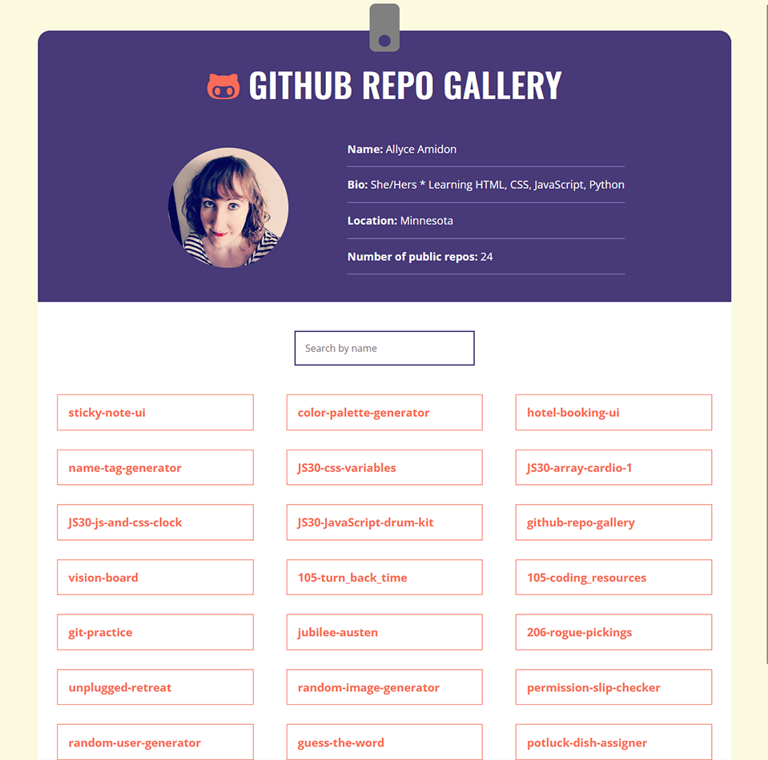

About

Allyce Amidon
Web Developer
Bringing a designer's vision to life is my passion, whether that's coding up a website or sewing a costume for a production of
Midsummer Night's Dream. I love getting into the minutae and creating neat, organized, sensible code. Fun fact, before I got into
web development, I was using my coding skills to format books for press in the publishing industry. To me, there is nothing more satisfying than
seeing code you've written behind the scenes spring to life on the screen.
Projects

Guess the Word Game
An endlessly repeatable game where players have 8 chances to guess the letters of a randomized mystery word, built with vanilla JavaScript and an API.
Skills:JavaScript ES6, Manipulating the DOM, APIs
Tools:Visual Studio Code, Git, GitHub
Live Page

Sticky Note App
An online sticky note app, built with JSX, that allows users to add, edit, search, and delete sticky notes and saves their data between sessions.
Skills:JavaScript ES6, JSX, Managing Data Flow, Manipulating the DOM
Tools:CodeSandbox
Live Page

Unplugged Retreat Website
A responsive multi-page website for a tech retreat company styled with CSS, featuring Google Maps integration.
Skills:HTML5, CSS3, Flexbox, Responsive Typography
Tools:Photoshop, Visual Studio Code, Git, GitHub
Live Page

GitHub Repo Gallery
A searchable gallery showcasing all of my public GitHub repos, built with JSX and utilizing APIs.
Skills:JSX, APIs, Manipulating the DOM
Tools:Visual Studio Code, Git, GitHub
Live Page